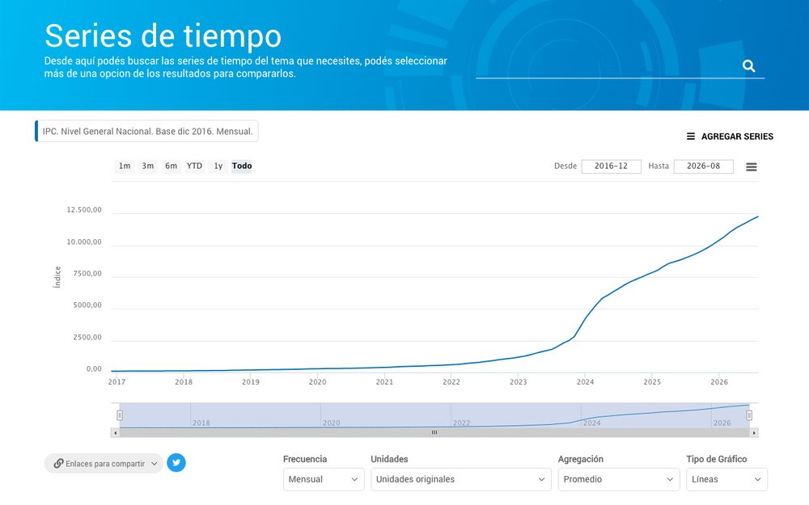

<!doctype html>
<meta charset="utf-8">
<meta name="viewport" content="width=device-width,initial-scale=1">
<title>Ecosistema en Píxeles</title>
<link rel="preconnect" href="https://fonts.googleapis.com">
<link rel="stylesheet" href="https://fonts.googleapis.com/css2?family=Montserrat:wght@500;700;800&family=IBM+Plex+Mono:wght@400&display=swap">
<style>
/* pixel art a pantalla completa; paleta de Datos Abiertos. Tema único, a propósito. */
:root{
  color-scheme:light;
  --tinta:#141414; --navy:#232D4F; --indigo:#393793; --violeta:#B369ED; --papel:#F7F7F8; --tenue:#5E6072;
  --sans:Montserrat,system-ui,sans-serif; --mono:"IBM Plex Mono",ui-monospace,Menlo,monospace;
}
html,body{height:100%;margin:0;overflow:hidden;background:#1B2146}
#pantalla{position:fixed;inset:0;width:100vw;height:100vh;height:100dvh;object-fit:cover;image-rendering:pixelated;image-rendering:crisp-edges;display:block}
.tarjeta{position:fixed;left:clamp(16px,3vw,48px);top:calc(clamp(16px,3vw,44px) + env(safe-area-inset-top,0px));max-width:min(560px,calc(100vw - 32px));
  background:rgba(247,247,248,.94);color:var(--tinta);padding:clamp(14px,1.6vw,22px) clamp(16px,2vw,26px);box-shadow:6px 6px 0 rgba(35,45,79,.35);
  font:500 clamp(14px,1.25vw,18px)/1.45 var(--sans);transition:opacity .6s ease, transform .6s ease}
.tarjeta.oculta{opacity:0;transform:translateY(-8px)}
.tarjeta .kicker{margin:0 0 6px;font:400 clamp(11px,.9vw,13px) var(--mono);letter-spacing:.14em;text-transform:uppercase;color:var(--indigo)}
.tarjeta h2{margin:0 0 8px;font:800 clamp(22px,2.6vw,38px)/1.08 var(--sans);letter-spacing:-.015em;text-wrap:balance}
.tarjeta p{margin:0;color:var(--tenue)}
.cifras{display:flex;flex-wrap:wrap;gap:6px 26px;margin-top:12px}
.cifras b{display:block;font:800 clamp(22px,2.4vw,34px)/1 var(--sans);color:var(--tinta);font-variant-numeric:tabular-nums}
.cifras small{font:400 clamp(11px,.85vw,13px) var(--mono);color:var(--tenue)}
.titulo{max-width:min(760px,calc(100vw - 32px))}
.titulo h2{font-size:clamp(34px,5vw,72px)}
.foto{position:fixed;right:clamp(16px,3vw,48px);top:calc(clamp(16px,3vw,44px) + env(safe-area-inset-top,0px));width:min(34vw,420px);margin:0;
  background:var(--papel);padding:8px;box-shadow:6px 6px 0 rgba(35,45,79,.35);transition:opacity .6s ease}
.foto img{display:block;width:100%;height:auto}
.foto figcaption{font:400 12px var(--mono);color:var(--tenue);padding:6px 2px 0}
.foto.oculta{opacity:0}
.hud{position:fixed;left:50%;transform:translateX(-50%);bottom:calc(14px + env(safe-area-inset-bottom,0px));display:flex;gap:10px;align-items:center;
  background:rgba(20,26,58,.55);padding:8px 12px;transition:opacity .5s}
.hud.quieto{opacity:0}
.hud button{all:unset;cursor:pointer;color:#fff;font:700 13px var(--sans);padding:2px 6px}
.hud button:focus-visible{outline:2px solid var(--violeta)}
.puntos{display:flex;gap:6px}
.puntos i{width:8px;height:8px;background:rgba(255,255,255,.35)}
.puntos i.ya{background:rgba(255,255,255,.8)}.puntos i.ahora{background:var(--violeta)}
@media (max-width:700px){.foto{display:none}}
</style>

<canvas id="pantalla" aria-hidden="true"></canvas>
<section class="tarjeta" id="tarjeta" aria-live="polite"></section>
<figure class="foto oculta" id="foto"><figcaption>El explorador de series de 2018</figcaption></figure>
<nav class="hud" id="hud" aria-label="Capítulos">
  <button type="button" id="ant" aria-label="Capítulo anterior">‹</button>
  <span class="puntos" id="puntos"></span>
  <button type="button" id="sig" aria-label="Capítulo siguiente">›</button>
  <button type="button" id="pausa" aria-label="Pausar">❚❚</button>
</nav>

<script>
const reduce = matchMedia('(prefers-reduced-motion: reduce)').matches;
const cv = document.getElementById('pantalla'), x = cv.getContext('2d');
const H = 216, G = 172;           // alto del mundo y línea del piso
let W = 384;                      // ancho visible: sale del aspecto de la pantalla
const fmt = n => Math.round(n).toLocaleString('es-AR');
const mill = v => (v / 1e6).toFixed(1).replace('.', ',');

// ---------- paleta ----------
const C = {
  navy: '#232D4F', indigo: '#393793', violeta: '#B369ED', tile: '#ECECEC', blanco: '#FFFFFF', papel: '#F7F7F8',
  muro: '#E4E5EC', muroS: '#C9CBD8', vidrio: '#2B3566', luz: '#FFE39A', piso: '#CFCBC2', pisoS: '#B7B2A7', pasto: '#A9C3A2', pastoS: '#8FAE8A', calle: '#6B6B78',
};
const mezcla = (a, b, t) => { const p = h => [1, 3, 5].map(i => parseInt(h.slice(i, i + 2), 16)); const A = p(a), B = p(b);
  return '#' + A.map((v, i) => Math.round(v + (B[i] - v) * t).toString(16).padStart(2, '0')).join(''); };

// ---------- fuente de 3x5 ----------
const F = {A:'010101111101101',B:'110101110101110',C:'011100100100011',D:'110101101101110',E:'111100110100111',F:'111100110100100',G:'011100101101011',H:'101101111101101',I:'111010010010111',J:'001001001101010',K:'101101110101101',L:'100100100100111',M:'101111111101101',N:'110101101101101',O:'010101101101010',P:'110101110100100',Q:'010101101110011',R:'110101110101101',S:'011100010001110',T:'111010010010010',U:'101101101101111',V:'101101101101010',W:'101101111111101',X:'101101010101101',Y:'101101010010010',Z:'111001010100111',
  0:'111101101101111',1:'010110010010111',2:'110001010100111',3:'110001010001110',4:'101101111001001',5:'111100110001110',6:'011100111101111',7:'111001010010010',8:'111101111101111',9:'111101111001110',
  ',':'000000000010100','.':'000000000000010','*':'000101010101000','-':'000000111000000','/':'001001010100100',' ':'000000000000000'};
let camX = 0;
const R = (wx, y, w, h, c) => { const sx = Math.round(wx - camX); if (sx + w < 0 || sx > W) return; x.fillStyle = c; x.fillRect(sx, Math.round(y), w, h); };
const ancho = s => s.length * 4 - 1;
function txt(s, wx, y, c, centro = false){
  s = s.toUpperCase(); let px = centro ? wx - ancho(s) / 2 : wx;
  for (const ch of s){ const g = F[ch] || F[' ']; for (let k = 0; k < 15; k++) if (g[k] === '1') R(px + k % 3, y + (k / 3 | 0), 1, 1, c); px += 4; }
}

// ---------- tiempo narrativo ----------
/* Cada capítulo tiene duración, a dónde mira la cámara y su tarjeta.
   Todo lo que se dibuja depende del avance de su capítulo (0 a 1), así cualquier momento se puede reconstruir. */
const CAPS = [
  {id: 'titulo', dur: 8, cam: 180, tit: true, kicker: 'Datos Abiertos · 2016 → 2026', h: 'El ecosistema de datos abiertos',
   p: 'Cómo creció, pieza por pieza, lo que hoy sostiene a datos.gob.ar.'},
  {id: 'andino', dur: 10, cam: 470, kicker: '2016', h: 'Nace Portal Andino',
   p: 'Una distribución de CKAN para que cualquier organismo publique sus datos abiertos con el Perfil Nacional de Metadatos.'},
  {id: 'red', dur: 11, cam: 400, kicker: 'Una red de portales', h: 'Los organismos se suman',
   p: 'datos.gob.ar cosecha sus catálogos: planillas XLSX, portales Andino y otros CKAN.', cifras: [[43, 'catálogos cosechados'], [38, 'organismos']]},
  {id: 'temas', dur: 11, cam: 560, kicker: 'Catálogo nacional', h: '1.287 datasets en 14 temas',
   p: 'Economía y Finanzas reúne 485. Le siguen Gobierno y Sector Público (190) y Energía (188). Cada caja son 50 datasets.', cifras: [[1287, 'datasets']]},
  {id: 'georef', dur: 12, cam: 780, kicker: '2017 – 2019 · API Georef', h: 'Georef ordena la geografía',
   p: 'Convierte direcciones escritas de cualquier forma en datos oficiales: "avenida de mayo 500" pasa a AV DE MAYO 500, Monserrat, CABA.'},
  {id: 'v2geo', dur: 12, cam: 790, kicker: '2025 – 2026 · Georef v2', h: 'Georef suma capas',
   p: 'Unidades geoestadísticas, establecimientos educativos cercanos, GeoPackage y búsqueda por localidad. La v2.1 reemplaza a la 1.0.'},
  {id: 'herramientas', dur: 10, cam: 940, kicker: 'Herramientas', h: 'Georef, desde donde ya trabajás',
   p: 'Plugin para QGIS, paquete georefar en CRAN, pygeorefar para Python y una planilla de Google con las funciones básicas.'},
  {id: 'series', dur: 12, cam: 1170, kicker: '2017 · API Series de Tiempo', h: 'Indicadores oficiales en una URL',
   p: 'Precios, actividad, empleo y más, listos para consultar, cruzar y transformar. En el cartel, las consultas mes a mes desde julio de 2023.', cifras: [[33154, 'series publicadas']]},
  {id: 'buscador', dur: 12, cam: 560, kicker: '2018 → 2026', h: 'Buscar series desde el portal',
   p: 'En 2018 datos.gob.ar sumó un explorador de series. En 2026 vuelve integrado al portal, como extensión de CKAN, y consulta a la API en vivo.', foto: true},
  {id: 'v2', dur: 12, cam: 470, kicker: '2026 · Andino V2', h: 'El portal se renueva',
   p: 'CKAN 2.11 sin tocar su código: lo propio va en extensiones. datos.gob.ar ya funciona sobre CKAN 2.11.5.'},
  {id: 'uso', dur: 13, cam: 1470, kicker: 'Uso', h: 'Cada vez más consultas',
   p: 'Entre enero y septiembre de 2026 las dos APIs superaron a cualquier año completo anterior.', cifras: [[165720630, 'consultas a Georef', mill, ' M'], [26341470, 'consultas a Series', mill, ' M']]},
  {id: 'cierre', dur: 14, cam: 480, kicker: 'Desde julio de 2023', h: 'Consultas a Georef y a Series',
   p: 'Detrás de cada una hay alguien normalizando una dirección, armando un tablero o respondiendo una pregunta con datos públicos.', cifras: [[472645670, 'consultas en total']]},
];
const INICIO = []; { let t = 0; CAPS.forEach(c => { INICIO.push(t); t += c.dur; }); }
const TOTAL = INICIO[INICIO.length - 1] + CAPS[CAPS.length - 1].dur;
const idx = id => CAPS.findIndex(c => c.id === id);
let T = 0; // segundos desde el comienzo
const cap = () => { let k = 0; while (k < CAPS.length - 1 && T >= INICIO[k + 1]) k++; return k; };
const av = id => { const k = idx(id), c = cap(); return c > k ? 1 : c < k ? 0 : Math.min(1, (T - INICIO[k]) / CAPS[k].dur); };
const tramo = (p, a, b) => Math.max(0, Math.min(1, (p - a) / (b - a)));
const suave = t => t * t * (3 - 2 * t);

// ---------- mundo fijo ----------
const MUNDO = 1700;
const cordillera = [], cerros = [];
for (let i = 0; i < MUNDO; i++){
  cordillera.push(Math.round(92 - Math.abs(Math.sin(i * .021) * 30 + Math.sin(i * .057 + 1) * 11 + Math.sin(i * .11) * 4)));
  cerros.push(Math.round(142 - Math.abs(Math.sin(i * .013 + 2) * 12 + Math.sin(i * .041) * 5)));
}
const estrellas = Array.from({length: 70}, (_, k) => [(k * 97) % 520, (k * 53) % 90 + 4, k % 3]);
const SERIES_M = [543837,1455930,1421536,2012547,1758673,1302750,1503569,1550431,1882894,2075619,1671717,1271491,1009871,1219876,1256946,1268604,1254240,1079935,1031848,847679,958090,1251489,1116500,1017510,1046163,1208147,1722444,794704,1503052,1422423,1350540,1733251,2768378,3485231,3482819,2882772,3031081,3684738,3922660];
const CASAS = [[258, 18, 22], [286, 22, 30], [318, 16, 20], [342, 24, 26], [374, 18, 34], [400, 22, 22], [430, 20, 28], [454, 16, 18]];

// ---------- piezas ----------
function cielo(n){
  const bandas = 6;
  for (let k = 0; k < bandas; k++){
    const dia = mezcla('#C9DDF2', '#EEF1F7', k / (bandas - 1)), noc = mezcla('#141A3A', '#2B3566', k / (bandas - 1));
    x.fillStyle = mezcla(dia, noc, n); x.fillRect(0, k * 16, W, 16);
  }
  x.fillStyle = mezcla('#EEF1F7', '#2B3566', n); x.fillRect(0, bandas * 16, W, H);
  if (n > .2) for (const [sx, sy, b] of estrellas) if (sx < W && ((T * 2 + b) | 0) % 5) { x.fillStyle = `rgba(255,255,255,${(n - .2) * (b ? .6 : 1)})`; x.fillRect(sx, sy, 1, 1); }
  // sol que se vuelve luna
  const cx = W - 60, cy = 34 + 10 * n, r = 9;
  for (let dy = -r; dy <= r; dy++) for (let dx = -r; dx <= r; dx++) if (dx * dx + dy * dy <= r * r){ x.fillStyle = mezcla('#FFE7A8', '#E9ECF7', n); x.fillRect(cx + dx, cy + dy, 1, 1); }
}
function fondo(n){
  const cm = camX * .35, cc = camX * .6;
  for (let sx = 0; sx < W; sx++){
    const i = Math.max(0, Math.min(MUNDO - 1, Math.round(sx + cm))), h = cordillera[i];
    x.fillStyle = mezcla('#AEB6D8', '#2A3263', n); x.fillRect(sx, h, 1, G - h);
    if (h < 74){ x.fillStyle = mezcla('#FFFFFF', '#C3C8E0', n); x.fillRect(sx, h, 1, Math.min(4, 74 - h)); }
    const j = Math.max(0, Math.min(MUNDO - 1, Math.round(sx + cc))), c = cerros[j];
    x.fillStyle = mezcla('#93A0C9', '#212852', n); x.fillRect(sx, c, 1, G - c);
  }
}
function suelo(n){
  x.fillStyle = mezcla(C.pasto, '#3C4A5E', n); x.fillRect(0, G, W, 3);
  x.fillStyle = mezcla(C.piso, '#2A2F45', n); x.fillRect(0, G + 3, W, H - G);
  x.fillStyle = mezcla(C.calle, '#1A1E33', n); x.fillRect(0, G + 12, W, 8);
  for (let wx = Math.floor(camX / 16) * 16; wx < camX + W; wx += 16) R(wx, G + 15, 7, 1, mezcla('#F7F7F8', '#8F93A8', n));
}
// edificio genérico: se levanta por pisos
function edificio(wx, w, h, avance, n, {techo = C.indigo, cartel, ventanas = true, pisos = 10} = {}){
  const alto = Math.round(h * avance); if (alto <= 0) return;
  const top = G - alto;
  R(wx - 1, top - 1, w + 2, alto + 1, C.navy);
  R(wx, top, w, alto, mezcla(C.muro, '#454C73', n));
  R(wx + w - 3, top, 3, alto, mezcla(C.muroS, '#363C60', n));
  if (ventanas) for (let y = G - pisos; y > top + 3; y -= pisos) for (let vx = wx + 4; vx < wx + w - 6; vx += 7){
    const lit = n > .3 && ((vx * 7 + y * 3) % 5 !== 0);
    R(vx, y - 5, 4, 4, lit ? C.luz : mezcla(C.vidrio, '#1C2247', n));
  }
  if (avance >= 1){ R(wx - 3, top - 3, w + 6, 3, techo); if (cartel) txt(cartel, wx + w / 2, top - 11, n > .5 ? '#FFFFFF' : C.navy, true); }
}
function paquete(wx, y, c = C.violeta){ R(wx - 1, y - 1, 3, 3, c); }

// ---------- escenas ----------
function portal(n){
  const a1 = av('andino'), a9 = av('v2'), a8 = av('buscador');
  const vieja = a9 < .5;
  if (vieja){
    edificio(490, 64, 72, suave(tramo(a1, .12, .75)), n, {cartel: a1 > .75 ? 'DATOS.GOB.AR' : null});
    if (a1 > .75){ R(517, G - 12, 10, 12, C.navy); }
    if (a9 > .15){ // andamios de la renovación
      const q = tramo(a9, .15, .45);
      for (let k = 0; k <= 6; k++) if (k / 6 <= q) R(486 + k * 12, G - 100, 1, 100, C.pisoS);
      for (let y = G - 10; y > G - 100 * q; y -= 12) R(484, y, 74, 1, C.pisoS);
    }
  } else {
    // Andino V2: cinco módulos, uno por extensión propia
    const q = tramo(a9, .45, .78), mods = ['THEME', 'SCHEMING', 'HARVEST', 'SPATIAL', 'SERIES'];
    R(480, G - 1, 84, 1, C.navy);
    mods.forEach((m, k) => {
      const t = tramo(q, k / 5, (k + 1) / 5); if (t <= 0) return;
      const y = G - 20 * (k + 1), baja = (1 - suave(t)) * 30;
      R(481, y - baja - 1, 82, 21, C.navy);
      R(482, y - baja, 80, 19, k % 2 ? mezcla(C.muro, '#454C73', n) : mezcla(C.tile, '#3C4368', n));
      R(482, y - baja, 3, 19, [C.violeta, C.indigo, C.navy, C.indigo, C.violeta][k]);
      txt(m, 522, y - baja + 7, n > .5 ? '#FFFFFF' : C.navy, true);
    });
    if (q >= 1){ R(477, G - 104, 90, 3, C.indigo); txt('DATOS.GOB.AR', 522, G - 113, n > .5 ? '#FFFFFF' : C.navy, true); txt('CKAN 2.11', 522, G - 121, C.violeta, true); }
  }
  // pantalla del buscador en el frente
  if (a8 > .45 && vieja){
    const q = tramo(a8, .45, .8);
    R(528, G - 44, 22, 16, C.navy); R(529, G - 43, 20, 14, mezcla('#FFFFFF', '#E9ECF7', n));
    const pts = SERIES_M.slice(-20);
    for (let k = 0; k < Math.round(20 * q); k++) R(529 + k, G - 31 - Math.round(pts[k] / 4e6 * 11), 1, 1, C.violeta);
  }
}
function red(n){
  const a = av('red');
  CASAS.forEach(([wx, w, h], k) => {
    const t = tramo(a, .08 + k * .06, .2 + k * .06);
    if (t > 0) edificio(wx, w, h, suave(t), n, {techo: [C.indigo, C.navy, C.violeta][k % 3], pisos: 9});
  });
  if (a > .55){ // paquetes de la cosecha por la calle
    for (let k = 0; k < 9; k++){
      const ph = ((T * 26 + k * 29) % 240);
      paquete(250 + ph, G + 16);
    }
    txt('COSECHA', 360, G + 24, n > .5 ? '#C9CBD8' : C.navy, true);
  }
}
function temas(n){
  const a = av('temas'), cols = [10, 4, 4, 3, 2, 2, 1, 1], val = ['485', '190', '188', '159', '103', '83', '74', '62'];
  let orden = 0; const total = cols.reduce((s, v) => s + v, 0);
  cols.forEach((c, k) => {
    const wx = 584 + k * 14;
    for (let j = 0; j < c; j++, orden++){
      const t = tramo(a, .15 + orden / total * .6, .15 + (orden + 1.4) / total * .6);
      if (t <= 0) continue;
      const y = G - 7 * (j + 1) - (1 - suave(t)) * 60;
      R(wx - 1, y - 1, 12, 8, C.navy); R(wx, y, 10, 6, k ? mezcla(C.tile, '#4A5178', n) : C.violeta); R(wx, y, 10, 1, mezcla('#FFFFFF', '#6A7199', n));
    }
    if (a > .15 + (orden) / total * .6 + .05) txt(val[k], wx + 5, G - 7 * c - 9, n > .5 ? '#FFFFFF' : C.navy, true);
  });
}
function torre(n){
  const a4 = av('georef'), a5 = av('v2geo');
  const alto = Math.round(92 * suave(tramo(a4, .08, .4)) + 24 * suave(tramo(a5, .1, .35)));
  if (alto <= 0) return;
  const base = 822, top = G - alto;
  for (let y = G; y > top; y--){
    const w = Math.round(3 + (y - top) / alto * 9);
    R(base - w, y, 1, 1, C.navy); R(base + w, y, 1, 1, C.navy);
    if ((y - top) % 8 === 0) R(base - w, y, 2 * w + 1, 1, C.navy);
    if ((y - top) % 8 === 4) for (let k = -w; k <= w; k += 2) R(base + k, y, 1, 1, C.indigo);
  }
  if (a4 > .4){
    // marcador en la punta
    R(base - 3, top - 9, 7, 6, C.violeta); R(base - 2, top - 3, 5, 2, C.violeta); R(base, top - 1, 1, 1, C.violeta); R(base - 1, top - 7, 3, 2, '#FFFFFF');
    txt('GEOREF', base, G + 24, n > .5 ? '#C9CBD8' : C.navy, true);
  }
  if (a5 > .35){ R(base, top - 20, 1, 11, C.navy); R(base + 1, top - 20, 12, 7, C.violeta); txt('2.1', base + 7, top - 19, '#FFFFFF', true); }
  // ondas: la API responde
  if (a4 > .45){
    for (let k = 0; k < 3; k++){
      const r = ((T * 30 + k * 40) % 120) | 0, cy = top - 6;
      if (r < 6) continue;
      const col = mezcla(C.violeta, C.papel, r / 120);
      for (let a = 0; a < 64; a++){ const an = a / 64 * Math.PI * 2; R(base + Math.cos(an) * r, cy + Math.sin(an) * r * .55, 1, 1, col); }
    }
  }
  // cartel: la dirección cruda y la normalizada
  if (a4 > .55){
    const norm = a4 > .75;
    R(742, G - 30, 1, 30, C.navy);
    const s = norm ? 'AV DE MAYO 500' : 'AVDA DE MAYO 500 CABA';
    const w = ancho(s) + 6;
    R(742 - w / 2 - 1, G - 38, w + 2, 11, C.navy); R(742 - w / 2, G - 37, w, 9, norm ? C.violeta : mezcla(C.tile, '#4A5178', n));
    txt(s, 742, G - 35, norm ? '#FFFFFF' : C.navy, true);
    if (norm) txt('MONSERRAT CABA', 742, G - 46, n > .5 ? '#FFFFFF' : C.indigo, true);
  }
  // escuelas cercanas (v2)
  [[880, .4], [908, .55]].forEach(([wx, d]) => {
    const t = tramo(a5, d, d + .15); if (t <= 0) return;
    edificio(wx, 18, 16, suave(t), n, {techo: C.violeta, pisos: 8});
    if (t >= 1){ R(wx + 9, G - 28, 1, 9, C.navy); R(wx + 10, G - 28, 5, 3, C.violeta); }
  });
  if (a5 > .75) txt('ESTABLECIMIENTOS', 894, G + 24, n > .5 ? '#C9CBD8' : C.navy, true);
}
function herramientas(n){
  const a = av('herramientas'); if (a <= 0) return;
  const kios = [['QGIS', 944], ['R', 982], ['PYTHON', 1022], ['PLANILLA', 1066]];
  const top = G - 116;
  kios.forEach(([nom, wx], k) => {
    const t = tramo(a, .1 + k * .12, .3 + k * .12); if (t <= 0) return;
    // cable desde la punta de la torre
    const x0 = 822, y0 = top - 4, x1 = wx, y1 = G - 26, pasos = 90;
    for (let s = 0; s < pasos * t; s++){ const u = s / pasos, cx = x0 + (x1 - x0) * u, cy = y0 + (y1 - y0) * u + Math.sin(u * Math.PI) * 18; R(cx, cy, 1, 1, C.navy); }
    if (t >= 1){
      edificio(wx - 18, 36, 24, 1, n, {techo: C.indigo, ventanas: false});
      txt(nom, wx, G - 16, C.navy, true);
      const u = ((T * .4 + k * .23) % 1), cx = x0 + (x1 - x0) * u, cy = y0 + (y1 - y0) * u + Math.sin(u * Math.PI) * 18; paquete(cx, cy);
    }
  });
}
function fabrica(n){
  const a = av('series'); if (a <= 0) return;
  edificio(1110, 52, 58, suave(tramo(a, .05, .3)), n, {techo: C.navy, pisos: 12});
  if (a > .3){
    for (let k = 0; k < 4; k++) R(1110 + k * 13, G - 64, 13 - k % 2, 6 - (k % 2) * 2, C.indigo); // techo en sierra
    R(1118, G - 78, 36, 9, C.navy); txt('SERIES', 1136, G - 76, '#FFFFFF', true);
  }
  // cartel con las consultas mensuales
  const q = tramo(a, .3, .9); if (q <= 0) return;
  const X0 = 1178, Y0 = G - 104, w = 120, h = 64;
  R(X0 + 20, Y0 + h, 2, G - Y0 - h, C.navy); R(X0 + w - 22, Y0 + h, 2, G - Y0 - h, C.navy);
  R(X0 - 2, Y0 - 2, w + 4, h + 4, C.navy); R(X0, Y0, w, h, mezcla('#FFFFFF', '#1E2447', n));
  R(X0 + 6, Y0 + h - 8, w - 12, 1, mezcla(C.muroS, '#5A6190', n)); R(X0 + 6, Y0 + 12, 1, h - 20, mezcla(C.muroS, '#5A6190', n));
  txt('CONSULTAS POR MES', X0 + 6, Y0 + 4, n > .5 ? '#FFFFFF' : C.navy);
  const N = Math.round(SERIES_M.length * q), px = m => X0 + 7 + m * (w - 16) / 38, py = v => Y0 + h - 9 - v / 4e6 * (h - 24);
  let prev = null;
  for (let m = 0; m < N; m++){
    const p = [px(m), py(SERIES_M[m])];
    if (prev){ const d = Math.max(1, Math.abs(p[0] - prev[0]), Math.abs(p[1] - prev[1])); for (let s = 0; s <= d; s++) R(prev[0] + (p[0] - prev[0]) * s / d, prev[1] + (p[1] - prev[1]) * s / d, 1, 1, C.violeta); }
    prev = p;
  }
  if (q >= 1){ txt('2023', X0 + 6, Y0 + h - 6, n > .5 ? '#C9CBD8' : C.tenue || C.navy); txt('2026', X0 + w - 21, Y0 + h - 6, n > .5 ? '#C9CBD8' : C.navy); }
}
function cable(n){
  const a = av('buscador'); if (a <= 0) return;
  // la API de Series alimenta al buscador del portal
  const x0 = 1136, y0 = G - 64, x1 = 548, y1 = G - 44, q = suave(tramo(a, .15, .5)), pasos = 600;
  for (let s = 0; s < pasos * q; s++){ const u = s / pasos, cx = x0 + (x1 - x0) * u, cy = y0 + (y1 - y0) * u + Math.sin(u * Math.PI) * 26; R(cx, cy, 1, 1, mezcla(C.indigo, '#9AA0D0', n)); }
  if (q >= 1) for (let k = 0; k < 5; k++){ const u = ((T * .12 + k * .2) % 1), cx = x0 + (x1 - x0) * u, cy = y0 + (y1 - y0) * u + Math.sin(u * Math.PI) * 26; paquete(cx, cy); }
}
function plaza(n){
  const a = av('uso'); if (a <= 0) return;
  const carteles = [['GEOREF', 1392, [63307302, 72454546, 105361207, 165720630], 180e6, C.violeta], ['SERIES', 1508, [8495273, 17045193, 13920049, 26341470], 30e6, C.indigo]];
  carteles.forEach(([nom, X0, vals, max, col], c) => {
    const w = 100, h = 78, Y0 = G - 100;
    R(X0 + 16, Y0 + h, 2, G - Y0 - h, C.navy); R(X0 + w - 18, Y0 + h, 2, G - Y0 - h, C.navy);
    R(X0 - 2, Y0 - 2, w + 4, h + 4, C.navy); R(X0, Y0, w, h, mezcla('#FFFFFF', '#1E2447', n));
    txt(nom, X0 + 6, Y0 + 5, n > .5 ? '#FFFFFF' : C.navy);
    const base = Y0 + h - 12;
    R(X0 + 6, base, w - 12, 1, mezcla(C.muroS, '#5A6190', n));
    ['23*', '24', '25', '26*'].forEach((y, k) => {
      const bx = X0 + 10 + k * 22;
      txt(y, bx + 7, base + 4, n > .5 ? '#C9CBD8' : C.navy, true);
      const t = tramo(a, .25 + c * .06 + k * .08, .45 + c * .06 + k * .08); if (t <= 0) return;
      // estallido al pasar por el eje
      if (t < .25) for (let r = 0; r < 8; r++){ const an = r / 8 * Math.PI * 2; R(bx + 7 + Math.cos(an) * (3 + t * 20), base + Math.sin(an) * (3 + t * 20), 1, 1, C.violeta); }
      const hh = Math.round(vals[k] / max * (h - 34) * suave(t));
      R(bx, base - hh, 14, hh, col);
      txt(mill(vals[k] * suave(t)).replace(',', ','), bx + 7, base - hh - 7, n > .5 ? '#FFFFFF' : C.navy, true);
    });
  });
  // consultas que llegan como luciérnagas
  if (a > .2) for (let k = 0; k < 26; k++){
    const u = ((T * .18 + k * .137) % 1), sx = 1380 + ((k * 61) % 240), sy = 20 + u * (G - 140);
    R(sx, sy, 1, 1, mezcla(C.luz, C.violeta, k % 2));
  }
}

// ---------- cámara y noche ----------
function camara(){
  const k = cap(), c = CAPS[k], prev = CAPS[Math.max(0, k - 1)];
  const lp = (T - INICIO[k]) / c.dur;
  let centro;
  if (c.id === 'cierre') centro = 1460 + (c.cam - 1460) * suave(tramo(lp, .1, .9));   // paneo lento por todo el pueblo
  else centro = prev.cam + (c.cam - prev.cam) * suave(tramo(lp, 0, k ? .28 : 0));
  camX = Math.round(Math.max(0, Math.min(MUNDO - W, centro - W / 2)));
}
function noche(){ return Math.min(1, av('uso') * 3.5); }

function dibujar(){
  camara();
  const n = noche();
  cielo(n); fondo(n); suelo(n);
  cable(n); red(n); portal(n); temas(n); herramientas(n); torre(n); fabrica(n); plaza(n);
}

// ---------- tarjeta ----------
const tarjeta = document.getElementById('tarjeta'), foto = document.getElementById('foto');
let tarjetaDe = -1, contadores = [];
function ponerTarjeta(k){
  const c = CAPS[k];
  tarjeta.classList.add('oculta');
  setTimeout(() => {
    tarjeta.className = 'tarjeta' + (c.tit ? ' titulo' : '');
    tarjeta.innerHTML = `<p class="kicker"></p><h2></h2><p class="p"></p>` + (c.cifras ? `<div class="cifras">${c.cifras.map(() => '<div><b>0</b><small></small></div>').join('')}</div>` : '');
    tarjeta.querySelector('.kicker').textContent = c.kicker; tarjeta.querySelector('h2').textContent = c.h; tarjeta.querySelector('.p').textContent = c.p;
    contadores = (c.cifras || []).map(([v, l, fo = fmt, suf = ''], j) => {
      const d = tarjeta.querySelectorAll('.cifras > div')[j]; d.querySelector('small').textContent = l;
      return {b: d.querySelector('b'), v, fo, suf};
    });
  }, reduce ? 0 : 350);
  foto.classList.toggle('oculta', !c.foto);
}
function actualizarContadores(){
  const k = cap(), lp = tramo((T - INICIO[k]) / CAPS[k].dur, .3, .75), e = reduce ? 1 : 1 - Math.pow(1 - lp, 3);
  contadores.forEach(c => c.b.textContent = c.fo(c.v * e) + c.suf);
}

// ---------- reproducción ----------
const puntos = document.getElementById('puntos');
CAPS.forEach(() => puntos.appendChild(document.createElement('i')));
let pausado = false, ultimo = performance.now(), congelar = null;
function tamano(){
  const r = innerWidth / innerHeight;
  W = Math.max(150, Math.min(560, Math.round(H * r)));
  cv.width = W; cv.height = H;
}
addEventListener('resize', tamano); tamano();
function cuadro(now){
  const dt = Math.min(.1, (now - ultimo) / 1000); ultimo = now;
  if (!pausado && congelar == null) T = (T + dt) % TOTAL;
  const k = cap();
  if (k !== tarjetaDe){ tarjetaDe = k; ponerTarjeta(k); [...puntos.children].forEach((p, j) => p.className = j < k ? 'ya' : j === k ? 'ahora' : ''); }
  dibujar(); actualizarContadores();
  requestAnimationFrame(cuadro);
}
const irA = k => { k = (k + CAPS.length) % CAPS.length; T = INICIO[k] + (reduce ? CAPS[k].dur * .95 : 0); };
document.getElementById('sig').addEventListener('click', () => irA(cap() + 1));
document.getElementById('ant').addEventListener('click', () => irA(cap() - 1));
const pausaBtn = document.getElementById('pausa');
const alternar = () => { pausado = !pausado; pausaBtn.textContent = pausado ? '▶' : '❚❚'; pausaBtn.setAttribute('aria-label', pausado ? 'Reanudar' : 'Pausar'); };
pausaBtn.addEventListener('click', alternar);
addEventListener('keydown', e => {
  if (e.key === 'ArrowRight'){ irA(cap() + 1); } else if (e.key === 'ArrowLeft'){ irA(cap() - 1); }
  else if (e.key === ' '){ e.preventDefault(); alternar(); }
});
// el control se esconde solo si no se mueve el mouse
const hud = document.getElementById('hud'); let hudT;
const mostrarHud = () => { hud.classList.remove('quieto'); clearTimeout(hudT); hudT = setTimeout(() => hud.classList.add('quieto'), 3000); };
addEventListener('pointermove', mostrarHud); addEventListener('keydown', mostrarHud); mostrarHud();
// #c5 abre el capítulo 5; #c5-60 lo congela al 60 % (sirve para revisar)
{ const m = location.hash.match(/^#c(\d+)(?:-(\d+))?$/);
  if (m){ const k = Math.min(CAPS.length - 1, +m[1]); T = INICIO[k] + (m[2] ? CAPS[k].dur * +m[2] / 100 : 0); if (m[2]) congelar = T; } }
if (reduce) irA(0);
requestAnimationFrame(cuadro);
</script>
